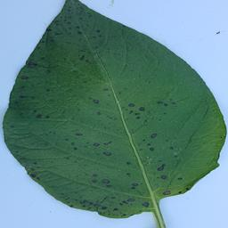
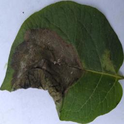

Klasifikasi Penyakit Tanaman Kentang
Unggah gambar daun tanaman kentang untuk mendeteksi penyakit
Informasi penyakit
Drag & drop atau klik untuk upload
JPG, PNG, JPEGTunggu sebentar ya, lagi memuat model
Unggah gambar daun tanaman kentang untuk mendeteksi penyakit
Drag & drop atau klik untuk upload
JPG, PNG, JPEGGunakan gambar pada link untuk mencoba klasifikasi: Link

Penyakit Early Blight disebabkan oleh jamur Alternaria solani. Ciri-cirinya adalah munculnya bercak-bercak cokelat gelap berbentuk lingkaran konsentris (seperti papan target) pada daun bagian bawah tanaman yang lebih tua. Bercak biasanya dikelilingi oleh area kuning (klorosis). Jika tidak ditangani, daun akan menguning, mengering, dan rontok sehingga mengurangi hasil panen.

Penyakit Late Blight disebabkan oleh oomycete Phytophthora infestans. Ciri-cirinya adalah munculnya bercak besar berwarna hijau gelap hingga cokelat kehitaman yang tampak basah (water-soaked) pada daun, batang, dan umbi. Pada kondisi lembap, sering terlihat pertumbuhan jamur putih seperti kapas di bagian bawah daun. Penyakit ini sangat agresif dan dapat menghancurkan seluruh tanaman dalam waktu singkat.
Daun tanaman kentang dalam kondisi sehat. Daun berwarna hijau cerah hingga hijau tua secara merata, tidak terdapat bercak, perubahan warna, atau tanda-tanda serangan patogen. Struktur daun utuh, permukaan daun bersih, dan tanaman menunjukkan pertumbuhan yang normal dan vigor.